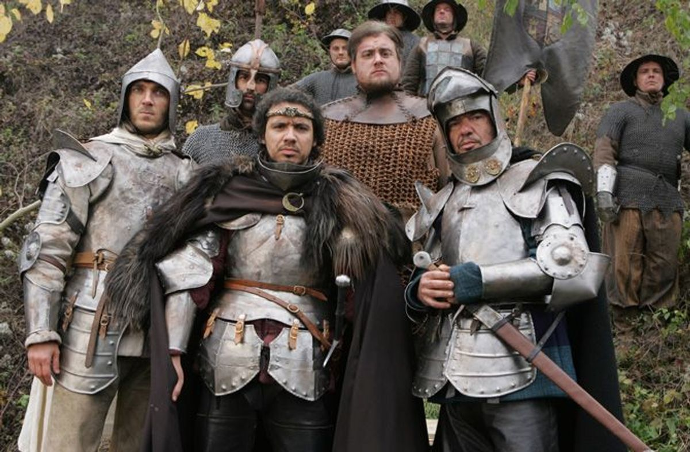

Arthur Pendragon is the main character of Kaamelott and the king of the kingdom of Logres, he
reigns over the whole Brittany island because he holds Excalibur. The Gods appointed him to build
the Round Table and carry out the quest for the Grail. He is interpreted by Alexandre Astier.
Arthur is surrounded by incompetent, lazy knights, easily frightened or distracted, who fail
most of their missions or who end up finding but then discarding invaluable artifacts, not
understanding the nature of their quest. When he tries to express a complex idea in a complex and
exact way, he is usually not understood and comes off as rather silly.

Arthur has very progressive ideas, and tries to abolish the slave trade, torture, and capital
punishment. His ideas usually clash with those of his father-in-law and minister of war and justice,
Léodagan "Le Sanguinaire"("the Bloodthirsty"). Arthur also clashes with Lancelot, his prime minister
and chief of staff, who believes that the Round Table and the Grail Quest should be for an elite,
not for the self-selected group of rather ordinary men who have answered Arthur's call.